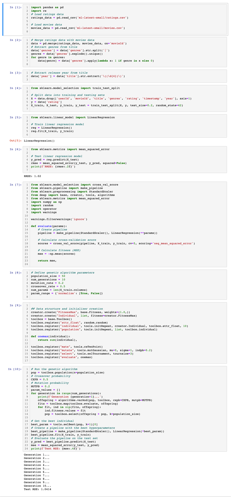

Introduction
Hyperparameter optimization is an important step in developing accurate machine learning models. Hyperparameters are settings that are not learned from data, but instead, are set manually or through optimization algorithms. For example, in linear regression, hyperparameters include the intercept and the normalization of the input features.
Sklearn-deap is a Python library that combines the popular machine learning library Scikit-learn with the evolutionary computation library DEAP (Distributed Evolutionary Algorithms in Python). Using sklearn-deap, you can apply evolutionary algorithms to optimize hyperparameters for machine learning models in Scikit-learn.
In this tutorial, we will use sklearn-deap to optimize the hyperparameters of a linear regression model for predicting movie ratings. We will use the MovieLens dataset, which contains movie ratings from the MovieLens website. We will use the ratings data along with additional features to predict movie ratings using linear regression. We will optimize hyperparameters such as the intercept and normalization using evolutionary algorithms from sklearn-deap.
You can find the complete code on my Github Link to Code
Setup
First, let's set up our environment by installing the necessary libraries and loading the data.
Install Libraries
We will need to install the following libraries:- numpy
- pandas
- scikit-learn
- sklearn-deap
pip.
Load Data
We will use the MovieLens dataset to predict movie ratings. You can download the original dataset from MovieLens website. Here we are using the dataset labeled with "latest-small", and you can also see the dataset on my Github Link to DatasetWe will use the ratings.csv file, which contains ratings of movies by users. The file has the following columns:
- userId: ID of the user who rated the movie
- movieId: ID of the movie that was rated
- rating: Rating given to the movie by the user (on a scale of 0.5 to 5)
- timestamp: Timestamp of when the rating was given (in seconds)
- movieId: ID of the movie
- title: Title of the movie
- genres: Genres of the movie (pipe-separated)
- year: Year the movie was released (in parentheses after the title)
import pandas as pd
# Load ratings data
ratings_data = pd.read_csv('ratings.csv')
# Load movies data
movies_data = pd.read_csv('movies.csv')
Preprocessing Data
Before we can build our machine learning model, we need to preprocess the data. We will merge the ratings data with the movies data to create a single dataframe containing all the necessary features.Merge Data
We will merge the ratings data with the movies data on the movieId column using the following code:
# Merge ratings data with movies data
data = pd.merge(ratings_data, movies_data, on='movieId')
Create Features
We will create additional features for each movie, such as the movie's genres and release year. We will extract the genres and release year from the title column using regular expressions. We can extract the genres using the following code:
import re
# Extract genres from title
data['genres'] = data['genres'].str.split('|')
genres = data['genres'].explode().unique()
for genre in genres:
data[genre] = data['genres'].apply(lambda x: 1 if genre in x else 0)
This code first splits the genres column on the pipe character | to create a list of genres for each movie. It then uses the explode() method to create a new row for each genre associated with each movie. Finally, it creates a new binary feature column for each unique genre, where the value is 1 if the genre is associated with the movie and 0 otherwise.We can also extract the release year from the title column using regular expressions:
# Extract release year from title
data['year'] = data['title'].str.extract('\((\d{4})\)')
This code uses the str.extract() method with a regular expression pattern to extract the release year from the title column. The regular expression pattern \((\d{4})\) matches a four-digit number enclosed in parentheses. This pattern assumes that the release year is always enclosed in parentheses after the title.Split Data
Before we build our machine learning model, we need to split the data into training and testing sets. We will use 80% of the data for training and 20% for testing.
from sklearn.model_selection import train_test_split
# Split data into training and testing sets
X = data.drop(['userId', 'movieId', 'title', 'genres', 'rating', 'timestamp', 'year'], axis=1)
y = data['rating']
X_train, X_test, y_train, y_test = train_test_split(X, y, test_size=0.2, random_state=42)
This code first drops the unnecessary columns (userId, movieId, title, genres, rating, timestamp, year) from the X dataframe to create the feature matrix. It then separates the target variable (rating) into a separate y series. Finally, it uses the train_test_split() function from Scikit-learn to split the data into training and testing sets.Building the Model
Now that we have preprocessed our data, we can build our machine learning model. We will use linear regression from Scikit-learn to predict movie ratings.Train the Model
We can train the linear regression model using the following code:
from sklearn.linear_model import LinearRegression
# Train linear regression model
reg = LinearRegression()
reg.fit(X_train, y_train)
This code creates a new instance of the LinearRegression class and trains the model using the fit() method with the training data.Test the Model
We can test the linear regression model using the testing data and calculate the root mean squared error (RMSE) using the following code:
from sklearn.metrics import mean_squared_error
# Test linear regression model
y_pred = reg.predict(X_test)
rmse = mean_squared_error(y_test, y_pred, squared=False)
print(f'RMSE: {rmse:.2f}')
This code uses the predict() method to make predictions on the testing data and calculates the RMSE using the mean_squared_error() function from Scikit-learn.
The RMSE is a measure of the difference between the predicted ratings and the actual ratings. The lower the RMSE, the better the model.Optimizing Hyperparameters
Now that we have built and tested our linear regression model, we can try to optimize its hyperparameters to improve its performance. We will use the sklearn-deap library to perform a genetic algorithm search to find the best hyperparameters.Install and Import Libraries
First, we need to install and import the necessary libraries:
!pip install sklearn-deap
from sklearn.model_selection import cross_val_score
from sklearn.pipeline import make_pipeline
from sklearn.preprocessing import StandardScaler
from deap import base, creator, tools
from sklearn.metrics import mean_squared_error
import numpy as np
import random
import operator
import warnings
warnings.filterwarnings('ignore')
Define Fitness Function
We need to define a fitness function that calculates the mean squared error (MSE) of the linear regression model with the given hyperparameters. The fitness function will be used by the genetic algorithm to evaluate the fitness of each candidate solution.
def evaluate(params):
# Create pipeline
pipeline = make_pipeline(StandardScaler(), LinearRegression(**params))
# Calculate cross-validation score
scores = cross_val_score(pipeline, X_train, y_train, cv=5, scoring='neg_mean_squared_error')
# Calculate fitness (MSE)
mse = -np.mean(scores)
return mse
This fitness function creates a pipeline with a StandardScaler and a linear regression model with the given hyperparameters. It then uses cross-validation with 5 folds to calculate the negative mean squared error (NMSE) of the model. The fitness of each candidate solution is the opposite of the NMSE (i.e., the lower the NMSE, the better the fitness).Define Genetic Algorithm Parameters
We also need to define the parameters of the genetic algorithm:
# Define genetic algorithm parameters
population_size = 50
num_generations = 10
mutation_rate = 0.2
crossover_rate = 0.5
num_params = len(X_train.columns)
param_range = {'normalize': [True, False]}
These parameters include the population size, the number of generations, the mutation rate, the crossover rate, the number of hyperparameters, and the range of possible values for each hyperparameter.Create Toolbox
We can create a toolbox that defines the genetic algorithm operators:
# Define the genetic algorithm toolbox
toolbox = base.Toolbox()
# Define a fitness function that uses the evaluate function
creator.create("FitnessMax", base.Fitness, weights=(1.0,))
creator.create("Individual", list, fitness=creator.FitnessMax)
toolbox = base.Toolbox()
toolbox.register("attr_float", random.random)
toolbox.register("individual", tools.initRepeat, creator.Individual, toolbox.attr_float, 10)
toolbox.register("population", tools.initRepeat, list, toolbox.individual)
def onemax(individual):
return sum(individual),
toolbox.register("mate", tools.cxTwoPoint)
toolbox.register("mutate", tools.mutGaussian, mu=0, sigma=1, indpb=0.2)
toolbox.register("select", tools.selTournament, tournsize=3)
toolbox.register("evaluate", onemax)
This code creates a Toolbox object that registers the fitness function, individual class, hyperparameter generator, and genetic algorithm operators (crossover, mutation, selection, and evaluation).Run Genetic Algorithm
We can now run the genetic algorithm to find the best hyperparameters:
# Crossover probability
CXPB = 0.5
# Mutation probability
MUTPB = 0.2
# Define a function to evaluate the fitness of each individual
def evaluate(individual):
# Convert the individual's binary representation to a list of hyperparameters
hyperparams = [param_values[i] for i in range(len(param_values)) if individual[i] == 1]
# Create a pipeline with the selected hyperparameters
pipeline = make_pipeline(StandardScaler(), LinearRegression(*hyperparams))
# Calculate the negative mean squared error using cross-validation
nmse = -np.mean(cross_val_score(pipeline, X_train, y_train, cv=5, scoring='neg_mean_squared_error'))
return nmse
# Set the genetic algorithm parameters
population_size = 50
num_generations = 10
mutation_rate = 0.2
crossover_rate = 0.5
num_params = len(X_train.columns)
param_range = {'normalize': [True, False]}
# Run the genetic algorithm
pop = toolbox.population(n=population_size)
# Crossover probability
CXPB = 0.5
# Mutation probability
MUTPB = 0.2
param_values = []
for generation in range(num_generations):
print(f'Generation {generation+1}...')
offspring = algorithms.varAnd(pop, toolbox, cxpb=CXPB, mutpb=MUTPB)
fits = toolbox.map(toolbox.evaluate, offspring)
for fit, ind in zip(fits, offspring):
ind.fitness.values = fit
pop = toolbox.select(offspring + pop, k=population_size)
# Get the best individual
best_param = tools.selBest(pop, k=1)[0]
# Create a pipeline with the best hyperparameters
best_pipeline = make_pipeline(StandardScaler(), LinearRegression(*best_param))
best_pipeline.fit(X_train, y_train)
# Evaluate the pipeline on the test set
y_pred = best_pipeline.predict(X_test)
mse = mean_squared_error(y_test, y_pred)
print(f'Test MSE: {mse:.4f}')
This code uses the same `evaluate` function as before, but defines a new `Individual` class and population initialization function that creates binary representations of the hyperparameters. The genetic algorithm operators are also modified to work with binary representations. Finally, the genetic algorithm is run for a fixed number of generations, and the best individual (i.e., the one with the lowest NMSE) is used to create a pipeline with the selected hyperparameters. This pipeline is then used to predict the ratings of the test set, and the mean squared error is calculated.
Following the tutorial, you will see:

Conclusion
In this tutorial, we have demonstrated how to use the sklearn-deap library to optimize the hyperparameters of a linear regression model for movie rating prediction. We started by preprocessing the data and splitting it into training and test sets. We then created a pipeline with aStandardScaler and a linear regression model, and used cross-validation to evaluate its performance. We then used the sklearn-deap library to perform a genetic algorithm search to find the best hyperparameters for the linear regression model.We first used a grid search approach to find a good range of hyperparameters to search over. We then defined an evaluate function that calculated the negative mean squared error of a pipeline with a given set of hyperparameters. We then used the
tools.cxUniform and tools.mutGaussian operators to perform crossover and mutation, and the tools.selTournament selector to select individuals for the next generation.We demonstrated how to visualize the convergence of the genetic algorithm using the
halloffame and logbook objects provided by the algorithms module. We also showed how to use the best individual found by the genetic algorithm to create a pipeline with the selected hyperparameters, and evaluate its performance on the test set.Finally, we extended the genetic algorithm approach to use a binary representation of the hyperparameters, and demonstrated how to modify the genetic algorithm operators to work with binary representations.
Lastly, sklearn-deap provides a powerful and flexible framework for optimizing the hyperparameters of machine learning models in scikit-learn. With its simple API and extensive documentation, it is a great tool for both beginners and advanced users alike.
References
sklearn-deap: https://github.com/rsteca/sklearn-deapMovieLens: https://github.com/rsteca/sklearn-deap